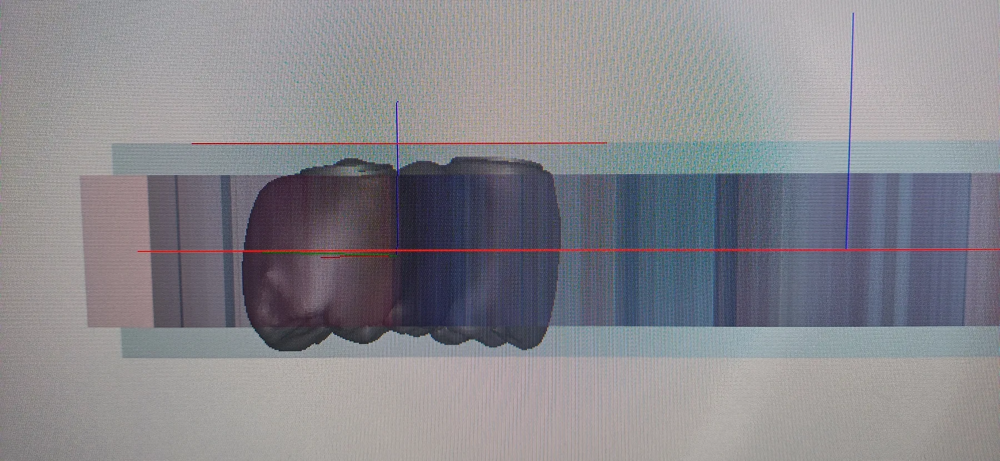
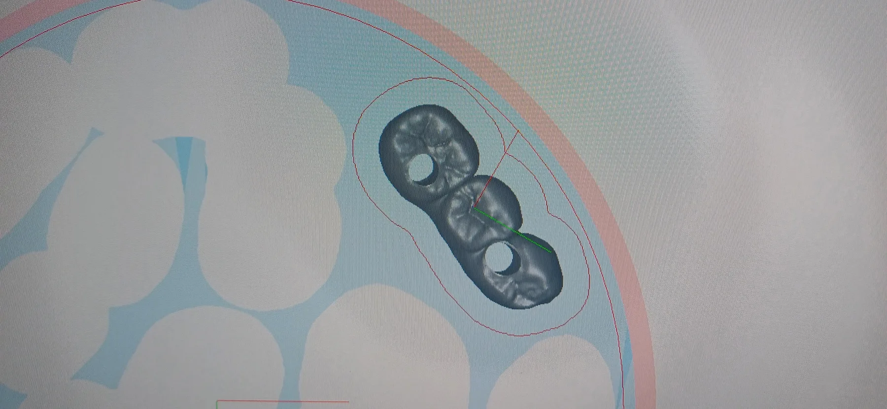
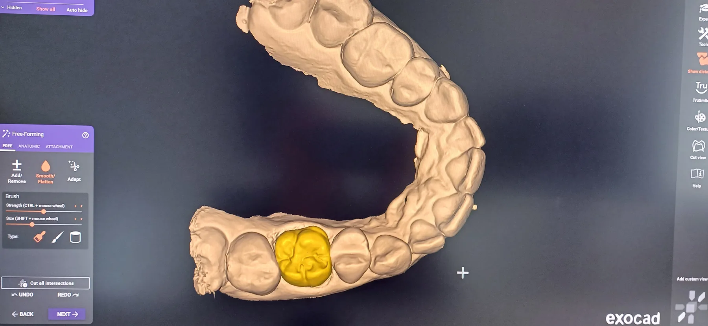
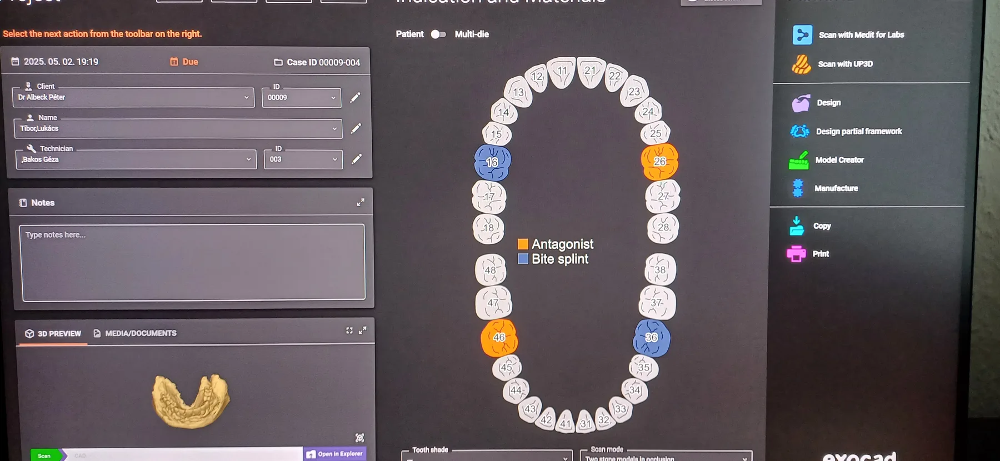

digitális munkafolyamat
korona marás előkészítés - nesting
digitálisan tervezett pótlás pozíciónálása a tömbben
DESIGN / GYÁRTÁS / MUNKAFOLYAMATOK
Válogatás a fogtechnikai tanulmányok és szakmai gyakorlat során végzett digitális és manuális laboratóriumi munkákból.
Orvosi segédeszközök, fogpótlások, próbamunkák és dokumentált részfolyamatok rövid bemutatása, a gyakorlati tapasztalatok és eredmények tükrében.
01 / Munkafolyamatok

digitális munkafolyamat
digitálisan tervezett pótlás pozíciónálása a tömbben

Digitális munkafolyamat
elhelyezés a tömbben virtuálisan, gazdaságos helykihasználással

Digitális munkafolyamat
Digitális tervezési és előkészítési részfolyamat.

Digitális munkafolyamat
A páciens és orvosi adatok megadása státusz megjelöléssel a visszakövethető tervezés érdekében.
02 / Kész munkák
03 / Elméleti munkák
Az elméleti alapok a gyakorlati laboratóriumi munkafolyamatok fontos részei.
04 / További részletek